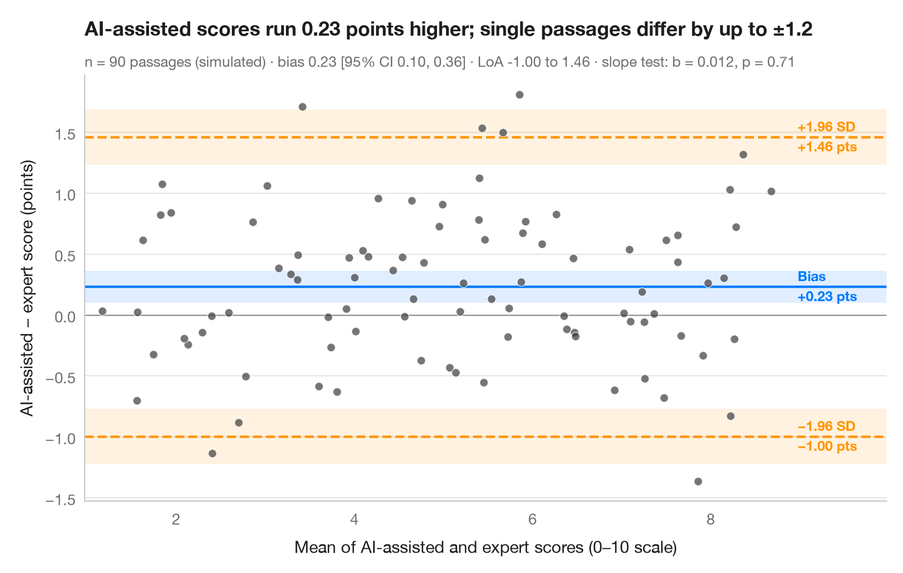

ブランド・アルトマンプロット
2 人のコーダーは政党の選挙綱領を左右軸上に同じように位置づけるか？バイアスと 95% 一致限界。

2 つの測定器 — あるいは 2 人のコーダー — が同じものを測るとき、高い相関は両者が一致しているかどうかについて何も語りません。ブランド・アルトマンプロットは、方法間の差を縦軸に、その平均を横軸にとります。中央の線は差の平均（系統的バイアス）、外側の線は 95% の一致限界（バイアス ± 1.96 SD）で、ほとんどの不一致はその内側に収まります。網掛けの帯はこれら 3 本の線の 95% 信頼区間で、Bland & Altman (1986) の標準誤差を用いています。点群に傾きがあれば比例バイアスを示唆します。
データは内容分析の典型的なチェックを模して numpy（シード固定）でシミュレーションしたものです。訓練を受けた 2 人のコーダーが同じ 80 本の政党綱領をそれぞれ 0〜10 の左右尺度に位置づけ、コーダー B はコーダー A より約 0.4 ポイント右寄りになるよう設定しています。バイアスと区間は scipy.stats.t、傾きの検定は statsmodels の OLS によります。
コードおよび図中のテキストは英語です。
import matplotlib.pyplot as plt
import numpy as np
import statsmodels.api as sm
from scipy import stats
# Simulated coding: 80 manifestos placed on a 0–10 left–right scale by two coders;
# coder B leans ~0.4 points to the right and is a little noisier
rng = np.random.default_rng(11)
n = 80
position = rng.uniform(1.5, 8.5, n)
coder_a = position + rng.normal(0, 0.35, n)
coder_b = position + 0.4 + rng.normal(0, 0.45, n)
mean, diff = (coder_a + coder_b) / 2, coder_b - coder_a
bias, sd = diff.mean(), diff.std(ddof=1)
loa = bias + np.array([-1.96, 1.96]) * sd
t = stats.t.ppf(0.975, n - 1)
ci_bias = t * sd / np.sqrt(n) # half-width of the CI for the bias
ci_loa = t * np.sqrt(3 * sd**2 / n) # Bland & Altman (1986) SE of a limit
slope = sm.OLS(diff, sm.add_constant(mean)).fit()
fig, ax = plt.subplots(figsize=(8, 5))
for y0, hw, c in [(bias, ci_bias, "#007AFF"), (loa[0], ci_loa, "#FF9500"), (loa[1], ci_loa, "#FF9500")]:
ax.axhspan(y0 - hw, y0 + hw, color=c, alpha=0.12, lw=0)
ax.axhline(y0, color=c, lw=1.6, ls="-" if c == "#007AFF" else "--")
ax.axhline(0, color="#8E8E93", lw=0.8)
ax.scatter(mean, diff, s=30, color="#3A3A3C", alpha=0.7, edgecolor="white", lw=0.6, zorder=3)
# Labels on the right margin
x_lab = mean.max() + 0.3
for y0, name, c in [(loa[1], "+1.96 SD", "#FF9500"), (bias, "Bias", "#007AFF"),
(loa[0], "−1.96 SD", "#FF9500")]:
ax.text(x_lab, y0, f"{name}\n{y0:+.2f} pts".replace("-", "−"), va="center", ha="left", fontsize=9,
color=c, fontweight="semibold", linespacing=1.3)
ax.set_xlim(mean.min() - 0.2, mean.max() + 1.3)
ax.set_xlabel("Mean left–right position of the two coders (0–10 scale)")
ax.set_ylabel("Coder B − coder A (points)")
ax.set_title(f"Coder B sits {bias:.2f} points further right; single codings differ "
f"by up to ±{1.96 * sd:.1f}", pad=26)
ax.text(0, 1.02, f"Simulated · n = {n} manifestos · bias {bias:.2f} [95% CI {bias - ci_bias:.2f}, "
f"{bias + ci_bias:.2f}] · LoA {loa[0]:.2f} to {loa[1]:.2f} · proportional bias: slope = {slope.params[1]:.3f}, "
f"p = {slope.pvalues[1]:.2f}", transform=ax.transAxes, fontsize=9.5, color="#6E6E73")
plt.show()
図にはオプションの PyStatlas スタイル を使用しています。同じ見た目にするには plt.style.use("pystatlas.mplstyle") を追加してください。
データの出典
- Simulated data. Simulated data with a fixed random seed, created for this example.
No real respondents, documents or measurements: the numbers only illustrate how the chart and its statistics work.
これらの例は統計手法を説明するためのものです。図のタイトルは、この特定のデータ（多くは小規模で、古く、部分的な標本）で図が示す内容を述べたものであり、実質的な問いに対する著者の立場ではありません。解釈、背景、データの質については、ここに挙げた元の出典を参照してください。
引用方法
PyStatlas は Thierry Warin が作成・運営しています。研究や業務に役立った場合は、ぜひ引用してください。
Warin, T. (2026). Bland–Altman plot. In PyStatlas: A Python Gallery of Statistical Graphics for the Social Sciences. https://warint.github.io/pystatlas/inference-uncertainty/bland-altman/
@misc{warin2026statlas,
author = {Warin, Thierry},
title = {PyStatlas: A Python Gallery of Statistical Graphics for the Social Sciences},
year = {2026},
howpublished = {\url{https://warint.github.io/pystatlas/}},
note = {Source code: https://github.com/warint/pystatlas}
}推測と不確実性のその他のグラフ

ブートストラップ分布
再標本化した相関係数を、パーセンタイル法と BCa 法の 95% 信頼区間とともに示します。
boot::boot() + boot::boot.ci()
95% 信頼区間の意味
ANES の回答者 944 人から 30 人を抽出する調査を 100 回。平均年齢の 95% 信頼区間のうち真値を外したものを赤で示します。
teaching classic (e.g. TeachingDemos::ci.examp())
検出力曲線
2標本 t 検定の検出力を、小・中・大の効果量ごとに標本サイズに対して描きます。
pwr::pwr.t.test() + plot()